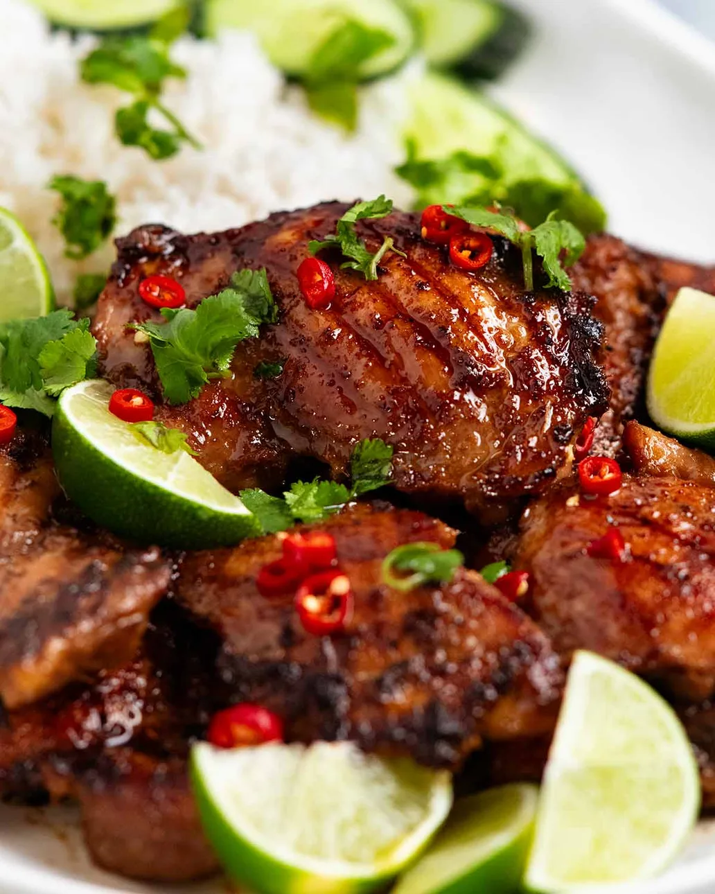

Thai Chicken
Home

Description
This Thai Chicken recipe is an easy way to make Gai Yang at home, Thailand's famous barbecue chicken. It uses a fragrant Thai marinade that delivers street-stall delicious without pounding pastes, lighting coals or wrestling a whole chicken! Serve with Coconut Rice and swoon.
Ingredients
- 1 kg chicken thigh fillets
- 1 large lemongrass stalk
- 4 cloves garlic
- 2 1/2 tbsp fish sauce
- 1 tbsp light soy sauce
- 2 tsp dark soy sauce
- 3 tbsp brown sugar
- 2 tbsp oil
Steps
- Blitz - Place Marinade ingredients EXCEPT oil in a jug just large enough to fit the head of a stick blender. Blitz until lemongrass and garlic is fully pureed.
- Marinate - Pour in a bowl. Add oil, stir. Add chicken, toss to thoroughly coat. Cover and marinate overnight. No marinating time? Finely slice, toss in marinade then cook like a stir-fry.
- Heat the outdoor BBQ grill on high or a non stick pan over high heat on the stove.
- Cook - Remove chicken from the Marinade and discard the Marinade. Put chicken on the BBQ or in the pan, then turn heat down to medium. Cook the chicken until golden brown - around 5 to 6 minutes on each side.
- Rest and serve - Rest for 3 minutes. Serve alongside a mound of steamy coconut rice with lime wedges, garnished with fresh chilies and coriander/cilantro, and your chosen sauce.